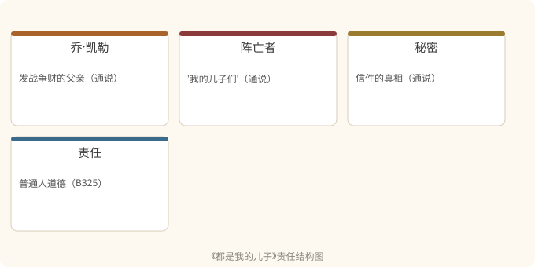

都是我的儿子
一、基本信息
| 作者 | 阿瑟·米勒 |
|---|---|
| 成书/出版 | 1947年（Britannica B325：All My Sons (1947)——第一部重要剧作获Tony奖） Arthur Miller — Encyclopaedia Britannica（百科全书） |
| 国别/地区 | 美国 |
| 时代 | 现当代 · 20世纪40年代 |
| 体裁 | 戏剧 |
| 语言 | 英语 |

《都是我的儿子》责任结构图（主题·结构图）
二、创作背景
Britannica（B325）：All My Sons——'first important play, won a Tony'。
Britannica（B325）：米勒把'普通人'置于悲剧中心。
题材（通说待核）：战争期间发售缺陷气缸的工厂主乔·凯勒——利润与责任。
三、内容脉络
（通说待核——B325未载剧情）凯勒家的秘密与阵亡飞行员。
（通说待核）'都是我的儿子'：责任的普遍化。
四、主要人物表
| 人物 | 身份 | 说明 |
|---|---|---|
| 乔·凯勒 | 工厂主 | （通说待核，B325未载） |
| 克里斯 | 儿子 | （通说待核，B325未载） |
五、主题与艺术特点
- 社会责任与家庭神话（通说待核）。
- '普通人'的道德重量（B325）。
- 战争经济的伦理（通说待核）。
六、影响与评论
- Britannica：All My Sons (1947)——'first important play, won a Tony'（B325）。
Arthur Miller — Encyclopaedia Britannica（百科全书） - Britannica：《推销员之死》为其巅峰（B325 交叉）。
Arthur Miller — Encyclopaedia Britannica（百科全书）
七、阅读建议
难点
- 易卜生式回溯结构（通说待核）。
- 二战军需工业背景。
- 《都是我的儿子》中译本（人民文学《阿瑟·米勒戏剧集》等——通说待核）。
- 英文原版。
米勒成名作；后接《推销员之死》。
八、待核实
- 乔·凯勒/克里斯/拉里人名核对（B325未载）。
- 1947年首演（Coronet Theatre说）待核。
- Tony奖类别待核。